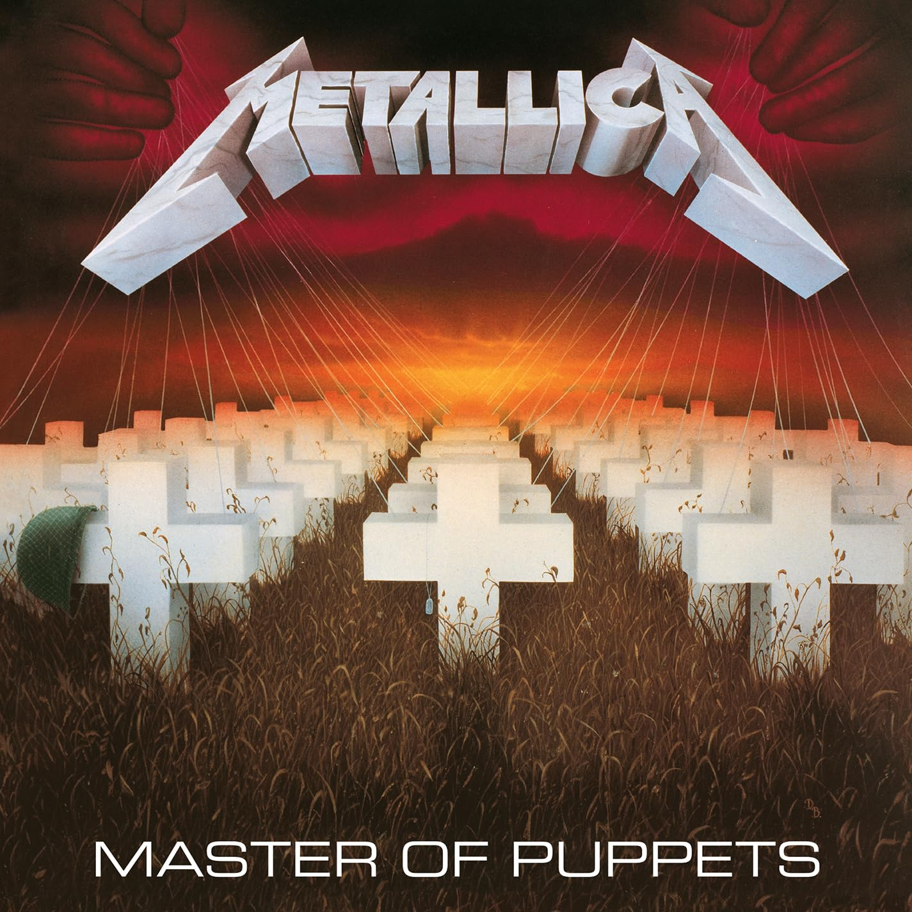

Boa Noite, Enrico
Seus Álbuns favoritos
And Justice For None
Five Finger Death Punch
Asylum
Decadence

Hybrid Theory
Linkin Park
AfterLife
Five Finger Death Punch
Músicas para churrasco vol.1
Seu Jorge
Me Against The World
2Pac
Life After Death
Notorious B.I.G
Com Base no que você ouve

Master of Puppets
Metallica
Regulate G-Funk Era
Warren-G
Piece of Mind
Iron Maiden

The Eminem Show
Eminem
R U Still Down? (Remember Me)
2Pac
Diamond Life
Sade
Luv Sic Hexalogy
Nujabes, Shing02